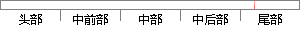

sql = "select * from goods where isSale=0 order by createTime desc limit %s, %s;
片段位置图

相似结果|
相似片段 1："+" and leima="+"'"+leima+"'"+" ORDER BYarticle.id DESC";//String sql = "select * from yewu where
相似片段 2：="+"'"+username+"'"+" ORDER BY upfile.id DESC";} //String sql = "select top"+ pageSize+" * from Doc"+//" where id
相似片段 3： & " * from news where audit=1 order byhits DESC"sql="select top " & n & " * from news where typeid=" & cstr
相似片段 4：);$nums=$result->num_rows;$sql="SELECT * FROM mis_equipment ORDER BY id DESC limit{$start
相似片段 5：="" or IsNumeric(borderid)=false thensql="select top " & n & " * from news where audit=1 order by ntime DESC"sql
相似片段 6： top 1 * from news where imgsize<>0 and audit=1 order by ntime DESC"sql="select top 1 * from news
|
※ 片段修改建议 ※
近似词参考：